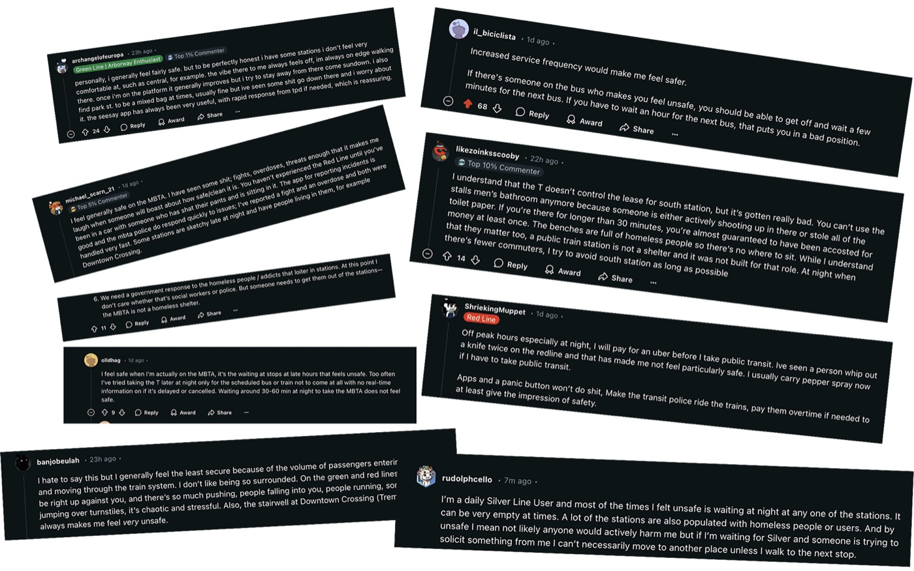
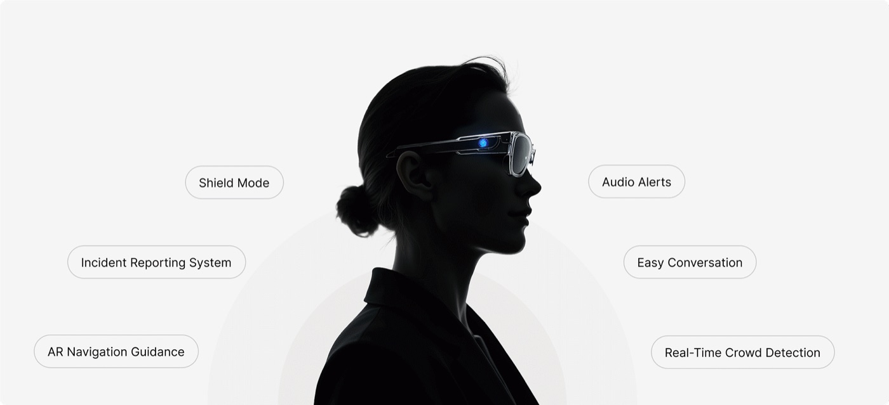

Case study · 2024
SafeVision
A concept for AR glasses that give public transit riders calm, real time reassurance about the people and places around them.

SafeVision is a conceptual product that makes public transit safer and easier to navigate. It combines AI, mixed reality and wearable glasses to give riders tools for personal safety and a better journey.
The result: real time visual reassurance that lowers anxiety and helps riders feel in control.
Read the room
See how the people nearby are feeling at a glance, so interactions stay calm and aware.
Danger Mode
When tension rises, the glasses switch to Danger Mode with one tap emergency actions.
Safer routes
Get route guidance that knows where you are and what is happening around you.
Five week process
Research, problem framing, ideation, prototyping, then final design and testing.
Process
- Kickoff: research into who, what and why.
- Week 2: identifying and validating the problem.
- Weeks 3 and 4: ideation, more research, an evaluation plan, storyboards and a prototype.
- Week 5 to final: final design and testing.
Territory map
I started with secondary research into the wider challenges of the MBTA. From that I built a territory map of the main rider groups, like commuters, tourists and elderly passengers, and the issues they face, like poor signage, missing real time information and accessibility gaps.

Survey
I surveyed 50 people on Reddit about how safe they feel on the MBTA, especially at night, and which tools they use to feel more secure.

Interviews
I then interviewed 6 people with more than 25 questions. A few of the answers:
- What times of day do you typically travel?
- “I usually travel during peak hours, which are very crowded.”
- Do you use any tools or apps to help with your MBTA experience?
- “Apps like Google Maps and Transit are helpful, but they don’t always show safety concerns.”
- Have you ever felt unsafe while using the MBTA?
- “I feel unsafe at night, especially in less busy stations or areas with poor lighting.”
- Are the signage and announcements clear and helpful?
- “I sometimes miss my stop because the announcements are unclear or inaudible.”
“When I’m on the train late at night, I keep checking my surroundings. I just wish I knew who’s around me, it would make me feel calmer.”User 4
“If something feels off, I don’t always know what to do. I want to feel like I have some control before things get serious.”User 2
“I don’t want the system to make me afraid of people. I want it to help me stay calm and safe, like it’s watching out for me quietly.”User 3
Journey map
I mapped a real trip from Hung Ave to Park Street. Anxiety peaks while waiting for a delayed train, when a stranger sits close by, and when trying to find the right exit at a crowded station.

Public transit safety is still a challenge. Riders feel exposed to harassment, violence and emergencies, and have little to help them in the moment.
How might we help public transit passengers feel safer and more in control during their journeys?
Through ideation sessions and sketching I explored features for the pain points from research: safety concerns, navigation problems and reporting incidents as they happen.

I used the Three Horizons framework to balance what could help now, like panic buttons and SOS kiosks, with nearer term ideas like crowd heat maps in an app, and a longer term vision: AR glasses.

Shield Mode: calm, live insight
The glasses scan the carriage and show a calm Safe meter for the people nearby. The green interface offers quiet reassurance, so riders stay aware without being distracted.

Emergency Shield: immediate response
When high risk cues are detected, the panel turns to Danger with a red meter and one tap actions like Call Emergency, Alert Staff and Share Location, so riders can act quickly and safely.

Safer navigation
Route guidance is drawn onto the street, with the nearest station and a small map, so riders can keep their heads up instead of looking down at a phone.


During the critique, people said that feeling safe also depends on understanding other people’s emotions. They described moments when someone seemed tense or distracted and it was hard to know how to act around them.
Design response: safety also means social awareness. That led to the Anxiety Level feature at the top of this page, which lets riders sense how stressed the people around them are, so they know when it is a good time to talk and when to give someone space.
The glasses would draw on public safety databases, live video feeds, transit system records and feedback from riders. They would also use environmental data like lighting and weather, along with trained AI models, to spot potential threats and alert riders in real time.

Through feedback and iteration I learned that safety is also about emotional awareness and social comfort. People don’t just want to feel protected, they want to understand how the people around them feel. Designing the Anxiety Level feature showed me how technology can build empathy, calm and connection, not fear.